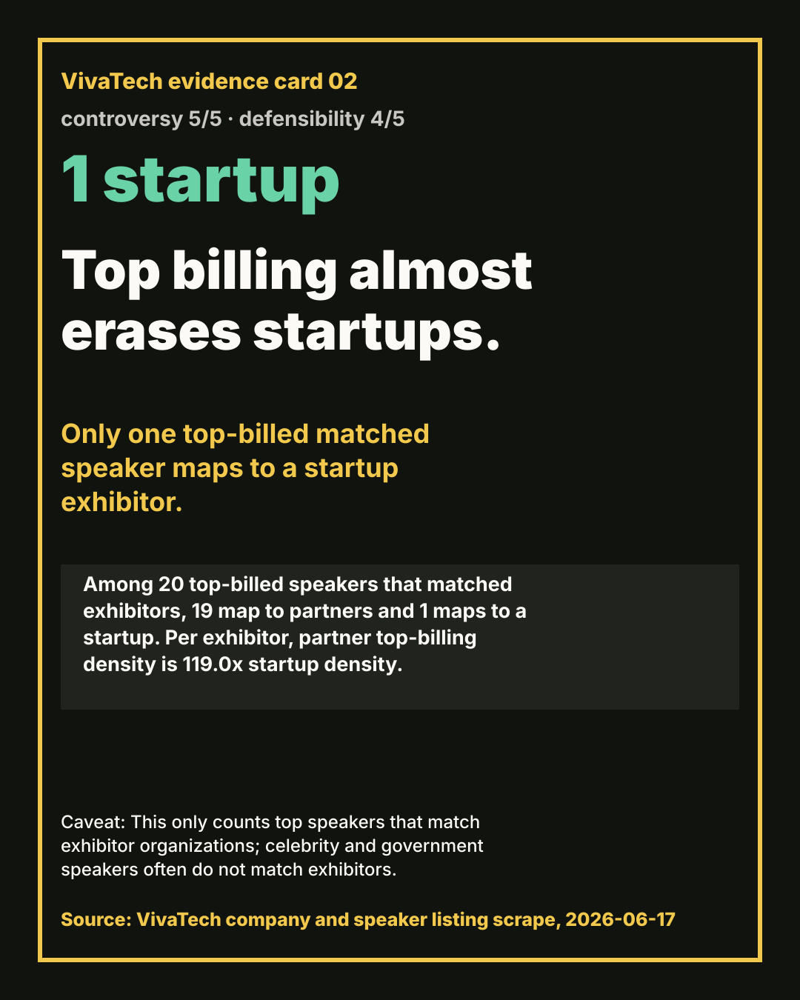
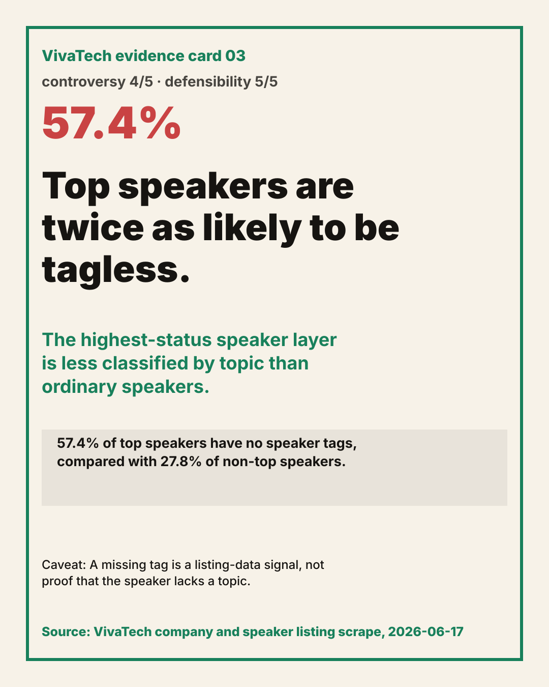
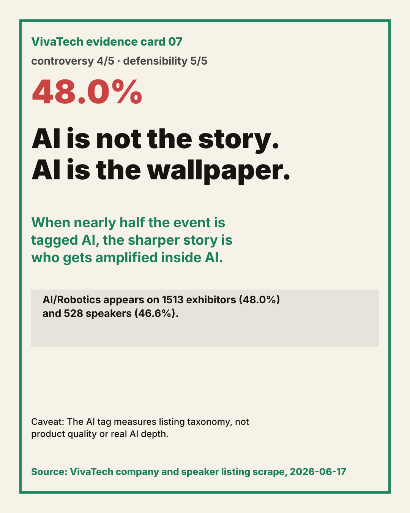
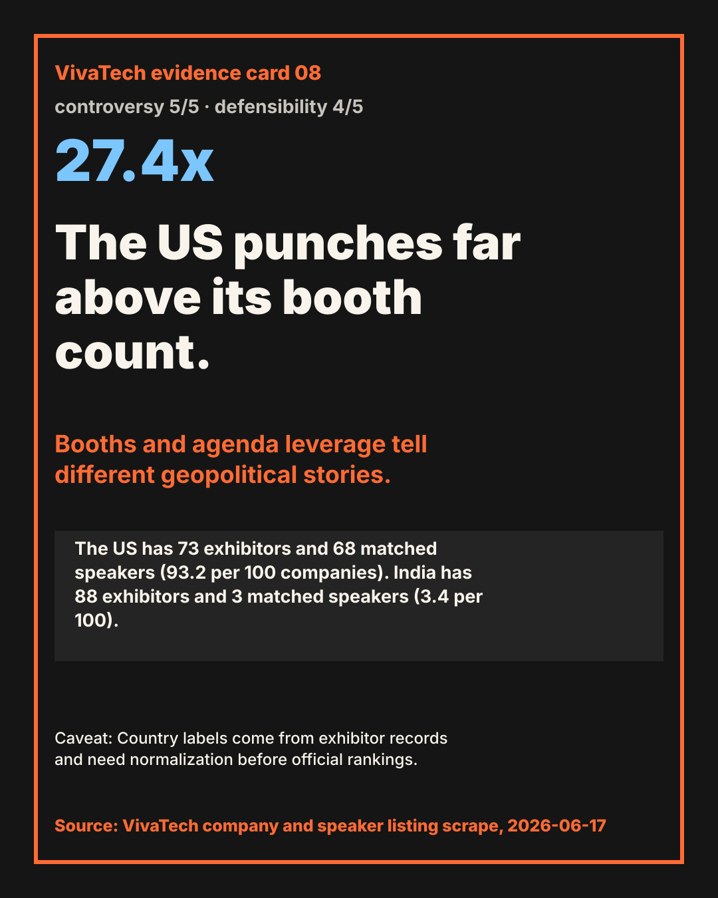
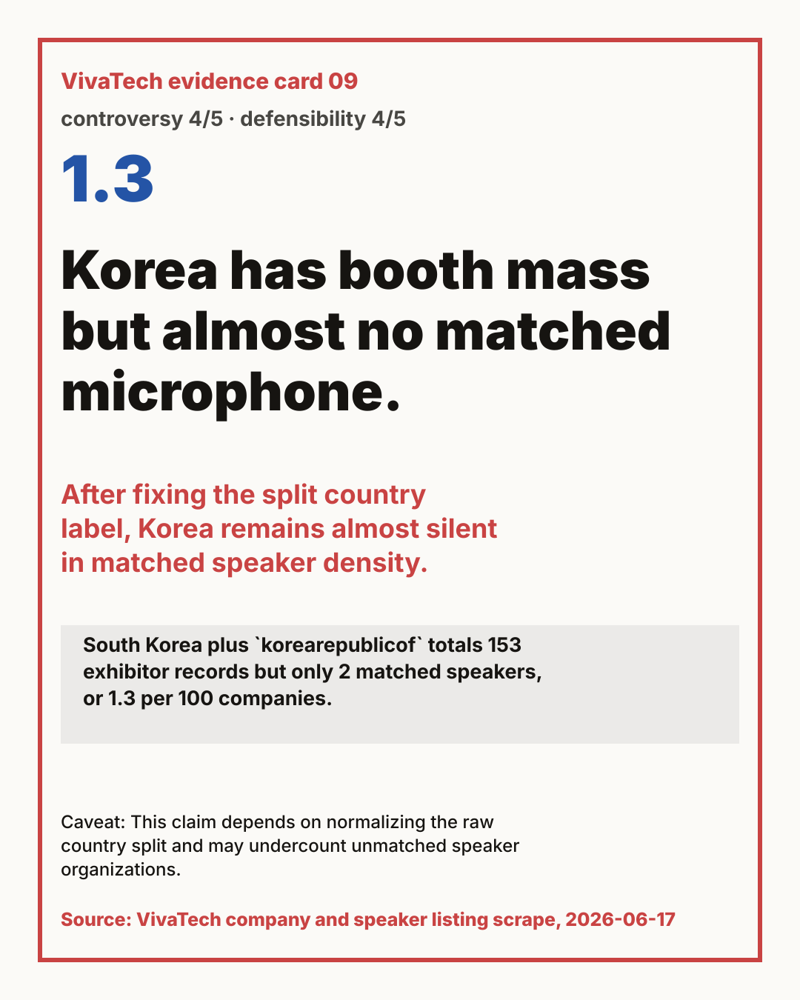
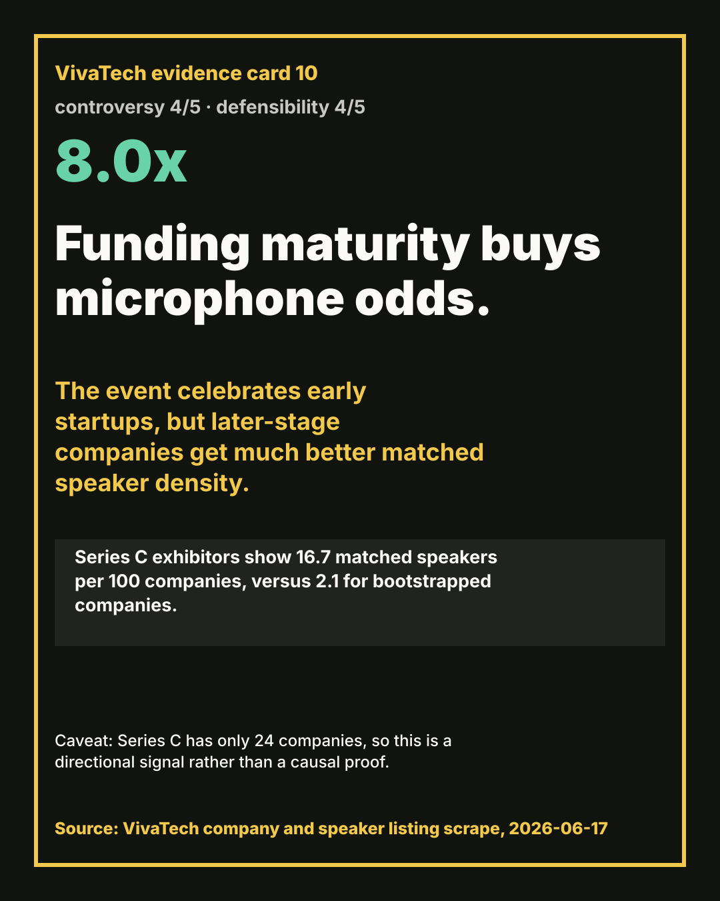
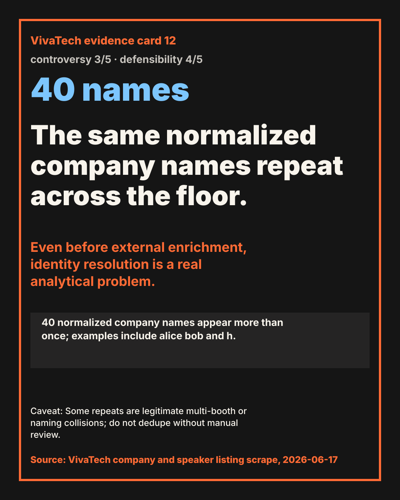

VivaTech publish kit
Copy-ready hooks, caveated captions, and the matching SVG evidence cards.

Partners are 21x louder per company than startups.
21.2x
Partners are 13.8% of exhibitors and 77.2% of matched speaker slots. Startups are 86.2% of exhibitors and 22.8% of matched speaker slots.
Caveat: This is based on conservative exhibitor-speaker organization matching; unmatched speakers are excluded.
Partners are 21x louder per company than startups. Partners are 13.8% of exhibitors and 77.2% of matched speaker slots. Startups are 86.2% of exhibitors and 22.8% of matched speaker slots. Important caveat: This is based on conservative exhibitor-speaker organization matching; unmatched speakers are excluded.

Top billing almost erases startups.
1 startup
Among 20 top-billed speakers that matched exhibitors, 19 map to partners and 1 maps to a startup. Per exhibitor, partner top-billing density is 119.0x startup density.
Caveat: This only counts top speakers that match exhibitor organizations; celebrity and government speakers often do not match exhibitors.
Top billing almost erases startups. Among 20 top-billed speakers that matched exhibitors, 19 map to partners and 1 maps to a startup. Per exhibitor, partner top-billing density is 119.0x startup density. Important caveat: This only counts top speakers that match exhibitor organizations; celebrity and government speakers often do not match exhibitors.

Top speakers are twice as likely to be tagless.
57.4%
57.4% of top speakers have no speaker tags, compared with 27.8% of non-top speakers.
Caveat: A missing tag is a listing-data signal, not proof that the speaker lacks a topic.
Top speakers are twice as likely to be tagless. 57.4% of top speakers have no speaker tags, compared with 27.8% of non-top speakers. Important caveat: A missing tag is a listing-data signal, not proof that the speaker lacks a topic.

Tech for Change is under-amplified.
4.0x gap
Tech for Change has 424 exhibitors but 13 matched speakers: 3.1 per 100 companies. Unlabeled exhibitors have 12.5 per 100, about 4.0x higher.
Caveat: The label may identify a curated floor program rather than a stage program; still, the attention gap is real in the listing data.
Tech for Change is under-amplified. Tech for Change has 424 exhibitors but 13 matched speakers: 3.1 per 100 companies. Unlabeled exhibitors have 12.5 per 100, about 4.0x higher. Important caveat: The label may identify a curated floor program rather than a stage program; still, the attention gap is real in the listing data.

The floor is concentrated in one hall, but attention is still scarce.
6.3%
Pavillon 7 contains 2517 exhibitors (79.8% of all companies), yet only 159 of those companies have a matched speaker (6.3%).
Caveat: Hall values are listing fields; 636 companies have no hall value in the payload.
The floor is concentrated in one hall, but attention is still scarce. Pavillon 7 contains 2517 exhibitors (79.8% of all companies), yet only 159 of those companies have a matched speaker (6.3%). Important caveat: Hall values are listing fields; 636 companies have no hall value in the payload.

Retail is the booth economy with almost no speaker narrative.
337 vs 6
Retail & E-commerce has 337 tagged exhibitors (10.7%) but only 6 tagged speakers (0.5%), a -10.2 point under-index.
Caveat: Tags are multi-select listing categories, not exclusive sectors.
Retail is the booth economy with almost no speaker narrative. Retail & E-commerce has 337 tagged exhibitors (10.7%) but only 6 tagged speakers (0.5%), a -10.2 point under-index. Important caveat: Tags are multi-select listing categories, not exclusive sectors.

AI is not the story. AI is the wallpaper.
48.0%
AI/Robotics appears on 1513 exhibitors (48.0%) and 528 speakers (46.6%).
Caveat: The AI tag measures listing taxonomy, not product quality or real AI depth.
AI is not the story. AI is the wallpaper. AI/Robotics appears on 1513 exhibitors (48.0%) and 528 speakers (46.6%). Important caveat: The AI tag measures listing taxonomy, not product quality or real AI depth.

The US punches far above its booth count.
27.4x
The US has 73 exhibitors and 68 matched speakers (93.2 per 100 companies). India has 88 exhibitors and 3 matched speakers (3.4 per 100).
Caveat: Country labels come from exhibitor records and need normalization before official rankings.
The US punches far above its booth count. The US has 73 exhibitors and 68 matched speakers (93.2 per 100 companies). India has 88 exhibitors and 3 matched speakers (3.4 per 100). Important caveat: Country labels come from exhibitor records and need normalization before official rankings.

Korea has booth mass but almost no matched microphone.
1.3
South Korea plus `korearepublicof` totals 153 exhibitor records but only 2 matched speakers, or 1.3 per 100 companies.
Caveat: This claim depends on normalizing the raw country split and may undercount unmatched speaker organizations.
Korea has booth mass but almost no matched microphone. South Korea plus `korearepublicof` totals 153 exhibitor records but only 2 matched speakers, or 1.3 per 100 companies. Important caveat: This claim depends on normalizing the raw country split and may undercount unmatched speaker organizations.

Funding maturity buys microphone odds.
8.0x
Series C exhibitors show 16.7 matched speakers per 100 companies, versus 2.1 for bootstrapped companies.
Caveat: Series C has only 24 companies, so this is a directional signal rather than a causal proof.
Funding maturity buys microphone odds. Series C exhibitors show 16.7 matched speakers per 100 companies, versus 2.1 for bootstrapped companies. Important caveat: Series C has only 24 companies, so this is a directional signal rather than a causal proof.

The public exhibitor list is not built for understanding companies.
100%
3153 of 3153 exhibitor short descriptions are empty (100.0%).
Caveat: Detail pages may contain richer information; this claim is scoped to the bulk listing payload.
The public exhibitor list is not built for understanding companies. 3153 of 3153 exhibitor short descriptions are empty (100.0%). Important caveat: Detail pages may contain richer information; this claim is scoped to the bulk listing payload.

The same normalized company names repeat across the floor.
40 names
40 normalized company names appear more than once; examples include alice bob and h.
Caveat: Some repeats are legitimate multi-booth or naming collisions; do not dedupe without manual review.
The same normalized company names repeat across the floor. 40 normalized company names appear more than once; examples include alice bob and h. Important caveat: Some repeats are legitimate multi-booth or naming collisions; do not dedupe without manual review.